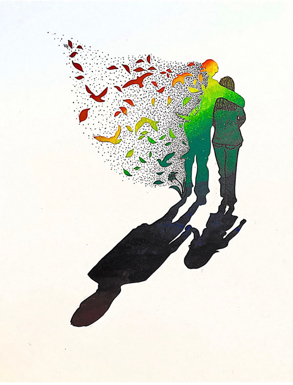
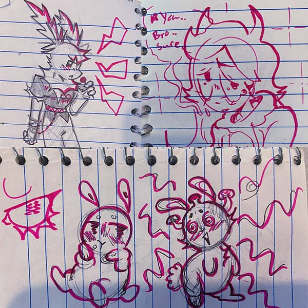

Visual Thinking Analysis
Part One
The image I chose for the project to explain in more detail is my piece titled “In Loving Memory”. This piece is a memento about my grandpa who passed away on October 16, 2020 and represents my relationship with him as a whole. The piece is full of symbolism and is an image that needs to be looked at closely in order to get its full meaning. Starting at the bottom, the shadow represents the past relationship with my grandpa. My grandpa had been there with me from the moment I was born and not only watched me grow up but also helped raise me. That shadow represents the little girl he helped raise, but also represents how I'll forever be that little girl by his side. Above the shadow is our current relationship. Our silhouettes are grown up to our present day bodies, but he is no longer physically around, which is why my silhouette is detailed in with sharpie while he is left blank. Despite him no longer being physically present, I still feel him with me, hence why he is shown hugging me, but also through the different things that remind me of him, which is why he is transforming into them: the trees, birds, and lilies.
This picture very clearly relates to my topic because the entire piece is about my grandpa. My topic is about my grandpa and our memories together and this piece is the magnum opus of what our relationship meant/means to me. As for what it says about me, well, I think it shows that I love and care about my grandpa, which is true. I mean, there's a reason why I keep talking about him after all these years.
(Fun Fact: This piece was actually a homework assignment for DES 15 where we had to create something that transforms into something else and is colored with the colors of the color wheel.)
Part Two
For this image exchange, I traded photos with Shay Sevey. The image Shay sent me is a photo of her doodles, which I know because I've seen her doodles before. This specific photo seems to be a collage of three separate doodles drawn in different parts of her notebook. For me the most interesting part of this image is the pens used to draw them. All of the sketches have a red or pink marker as a prominent feature of the doodles, but you can also see other lines from pencil sketches or ballpoint pens used in some of the doodles, which give them another dimension besides the pink marker. The most obvious part of the doodles is that they were drawn by Shay, but the most mysterious part, for me at least, is the context of why they were drawn. Were they just some doodles she drew out of boredom or were they intentionally drawn for a project she was working on? What is the backstory of these characters? Are these common characters she likes to draw or were they something new she was trying out for the moment?
Shay's Analysis of my Photo
- I think there are lots of different interpretations I can gather from this image but the ones that stick out the most for me would be a relationship with a guardian or parental figure and how it evolves and changes. The parental figure might be getting older or has already passed away, and the shadows depict the memory of all years before, showing bond is still there always.
- The most interesting aspect in this piece has to be the figures in the shadows. This portrayal gives us the best clues about what the relationship between the two figures is. The second biggest aspect is that the older figure is seemingly changing, fading, and flying away.
- Most obvious aspect would be the showing of a theme of a family tie and letting go. The most mysterious is figuring out exactly who or what happened with this connection and the symbolism of the colors and the fading away.